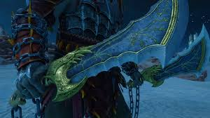
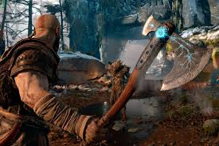

Espadas del Caos
Las Espadas del Caos son las armas más icónicas de Kratos, forjadas por el dios Ares como un símbolo de su servidumbre. Estas espadas están conectadas a las muñecas de Kratos mediante cadenas ardientes incrustadas en su piel, un recordatorio permanente de su juramento al dios de la guerra. Las cuchillas están impregnadas con el fuego del Inframundo, permitiéndoles prender en llamas y causar un daño devastador.
Estas armas representan el pasado sangriento de Kratos y su transformación de mortal a dios. A pesar de intentar dejarlas atrás en Grecia, Kratos se ve obligado a recuperarlas en los reinos nórdicos para proteger a Atreus, aceptando que son parte fundamental de su naturaleza. Su diseño permite ataques rápidos y de corto alcance, ideales para combates cercanos y contra múltiples enemigos.
Hacha Leviatán
El Hacha Leviatán es un arma creada por los hermanos enanos Sindri y Brok específicamente para Faye, la esposa de Kratos. Tras su muerte, Kratos hereda el hacha y la utiliza como su arma principal en los reinos nórdicos. Forjada como una respuesta al martillo Mjolnir de Thor, el Hacha Leviatán tiene la capacidad de canalizar el hielo y puede ser lanzada y recuperada instantáneamente por su portador.
Esta arma representa el nuevo comienzo de Kratos en Midgard y su deseo de dejar atrás su naturaleza violenta. A diferencia de las Espadas del Caos, el hacha requiere precisión y control, reflejando la evolución de Kratos como guerrero y padre. El hacha puede ser mejorada a lo largo del juego con diferentes pomos y mejoras que alteran sus estadísticas y habilidades especiales.

Las icónicas Espadas del Caos de Kratos
El poderoso Hacha Leviatán forjada por los enanos